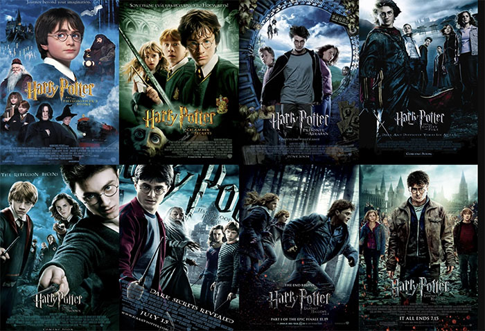

How Fantasy Books Shaped our movies
by Dawson Lange
Fantasy books have been around forever, full of dragons, magic, and epic quests. But did you ever stop to think about how much they've changed the movies we watch today? It's pretty wild when you think about it.Before these books really hit it big, our movies were mostly about cops, romances, or historical stuff. But once readers fell in love with made-up worlds, Hollywood started to pay attention, and now fantasy is everywhere.
Think about it this way: stories like "The Lord of the Rings" and "Harry Potter" weren't just popular books; they were huge events. When these got turned into movies, they showed everyone that audiences were hungry for big, imaginative tales.  These movies brought magic, mythical creatures, and complex worlds right to the big screen, and people went nuts for them. It proved that special effects could actually make these impossible things look real, which was a game-changer.
Because these early fantasy adaptations did so well, moviemakers realized there was a whole universe of stories waiting to be told. This opened the door for all sorts of fantasy elements to pop up in movies that aren't even direct adaptations. Suddenly, superhero movies got even more magical powers, sci-fi films started having more fantastical beasts, and even regular action movies sometimes have a touch of the extraordinary. Fantasy books basically taught Hollywood how to dream bigger.
So, next time you're watching a movie with a cool monster, a hero with a special destiny, or a whole new world, remember that it probably owes a lot to those old fantasy novels. They didn't just give us great stories to read; they showed filmmakers how to bring those incredible ideas to life, making cinema a much more exciting and imaginative place for all of us.
Why Books StillMatter in a Digital World
by Dawson Lange
In an age of constant notifications, endless scrolling, and bite-sized content, books remain a quiet rebellion against distraction. They ask for time, attention, and imagination—and in return, they offer depth, perspective, and a connection to ideas far bigger than ourselves. Whether tucked onto a nightstand or stored on an e-reader, books continue to play an essential role in how we learn, grow, and understand the world.
Books are powerful because they let us experience life through someone else’s eyes. A novel can place us in a different century, culture, or reality, helping us build empathy and curiosity. Nonfiction books do the same in their own way, breaking down complex ideas and preserving knowledge so it can be passed from one generation to the next. Through reading, we gain insight without having to live every experience ourselves.
There is also something deeply personal about reading. A book meets each reader where they are—its meaning can shift depending on your age, mood, or life experience. The same story can feel completely different when reread years later, revealing new layers and interpretations. This personal connection is what turns books into lifelong companions rather than disposable content.
In a world that moves quickly, books encourage us to slow down. They create space for reflection, focus, and imagination, reminding us that not everything worth knowing can be learned in a headline. No matter how technology evolves, books remain a timeless source of knowledge, comfort, and inspiration—and that is why they will always matter.